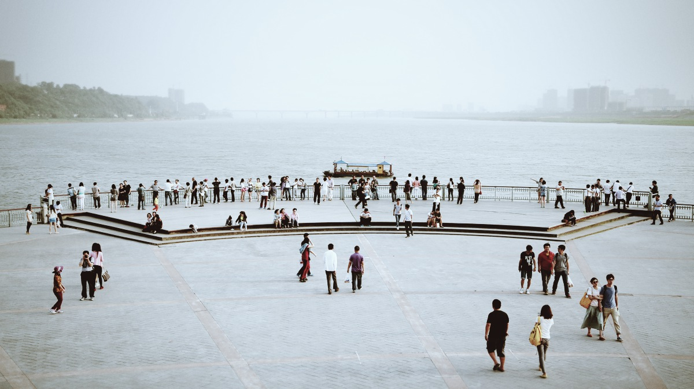

去长沙的时候正好赶上长沙第一条地铁线路开通，小长假期间地铁上最多的除了学生，大概都是周边郊县或者周边城市来长沙旅游的一大家子，老人小孩，挤在逼仄的地铁车厢。地铁横跨湘江，到橘子洲，下了一大波人，再到临近岳麓山的溁湾镇，又下一大波人。本以为湘江西岸就算郊区了，出了溁湾镇地铁站，却发现身处闹市中央，原来溁湾镇是长沙古代形成最早的集市之一，如今也自然是岳麓区的商业中心。岳麓山是难得不收门票的5A级风景区，遇上5.1，人自然也多，坐缆车要排至少40分钟的队，于是决定走路上山，这才觉得体力明显不如从前了，还好早些年把那些著名的大山都爬过了，真要现在去爬，想想都觉得吃力。只可惜这个季节的岳麓山，即便是“停车坐爱枫林晚，霜叶红于二月花”的爱晚亭附近，也只有零零星星几棵红枫，游山权当锻炼了。 和湘江东岸的喧嚣不同，橘子洲游人虽多，两岸漫步起来还是很惬意的。游橘子洲唤起了儿时的一段记忆，小时候爸妈教我背诵《沁园春.长沙》，还曾经用卡带录下来，记得我从头开始背“独立寒秋，湘江北去，橘子洲头。看万山红遍，层林尽染；漫江碧透，百舸（gě）争流。”然后便背不下去了，妈妈于是在一旁用不标准的四川普通话说“鹰击ji4长空嘛”，长大后每次听到小时候的这段录音，一家人便会哈哈大笑一阵，这盘带子大概还在老家，等下次回去要找出来翻录下。对于长沙，要说吃的，年纪渐长，对辣和油炸食品的欲望已经渐渐淡了，对于岳麓山和岳麓书院的文化积淀，有一些了解，但并不深入，看过一些史料，却始终记不住；唯一让我在情感上产生一些联系的大概就是橘子洲了，小时候背这首诗从来没想到真有橘子洲这个地方，大概只是觉得“橘子洲头”这几个字念起来很有趣，甚至有些好吃，更没想过若干年后会踏上这片细长的岛，就像冥冥中你以为要去新的地方，有一些新的经验，结果却发现它早就在你记忆深处了。 有声版：http://www.coletree.com/podcast/treeradio/078/ 